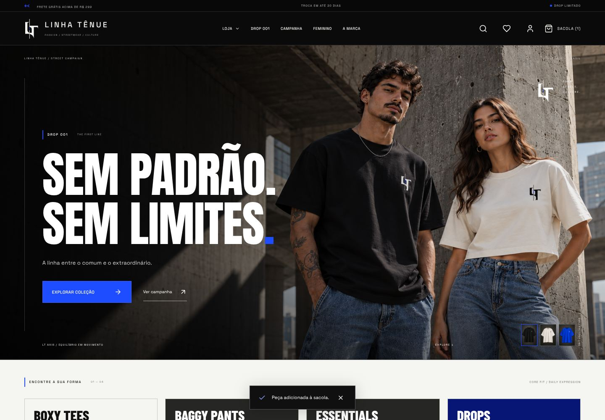
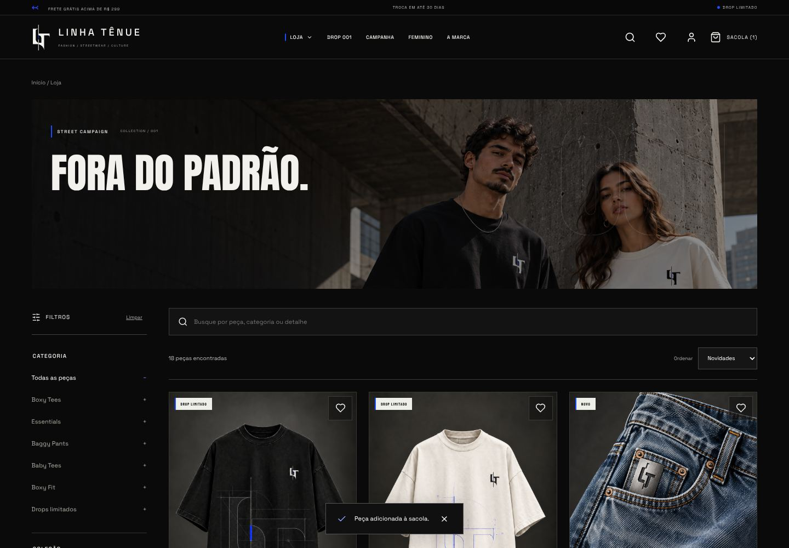
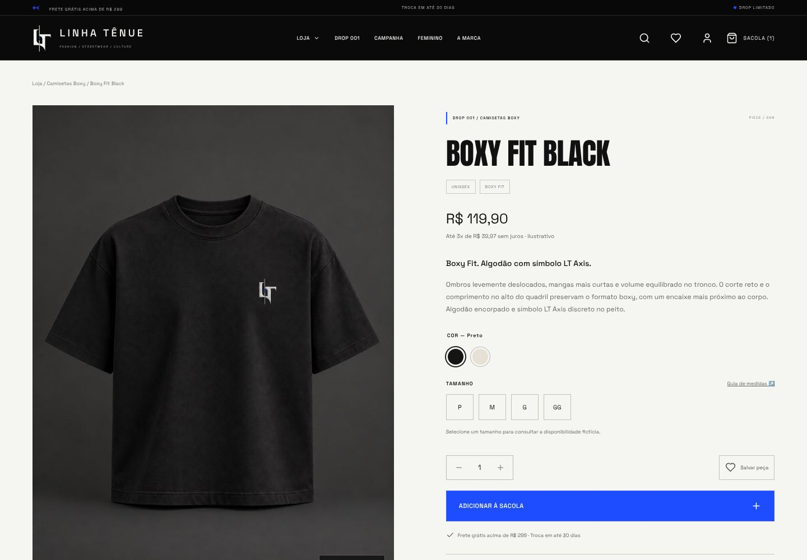
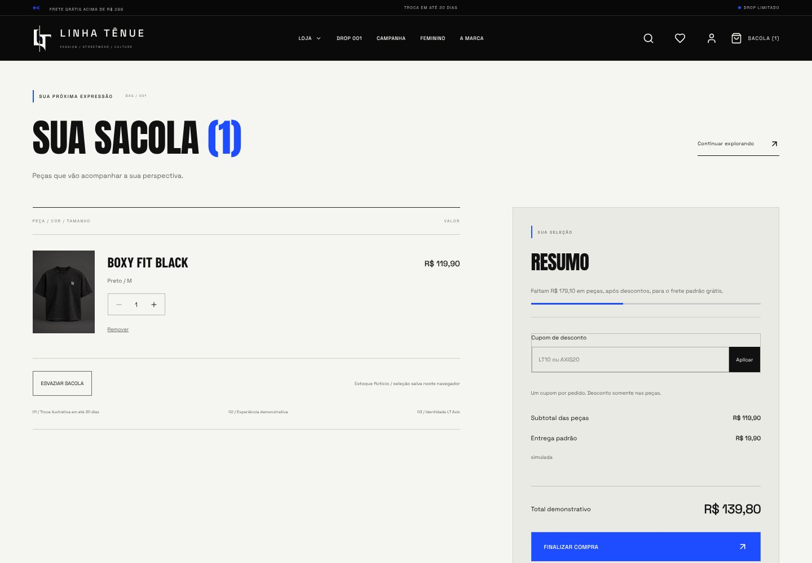
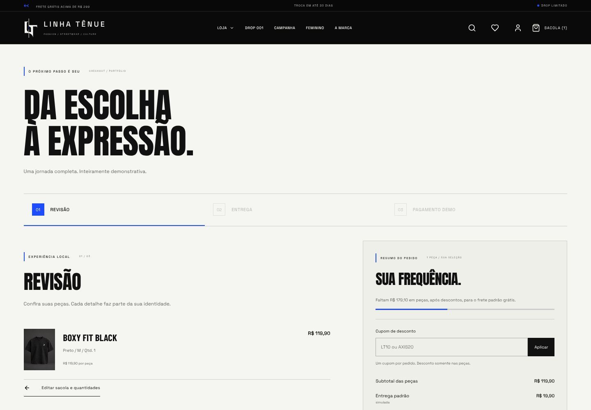
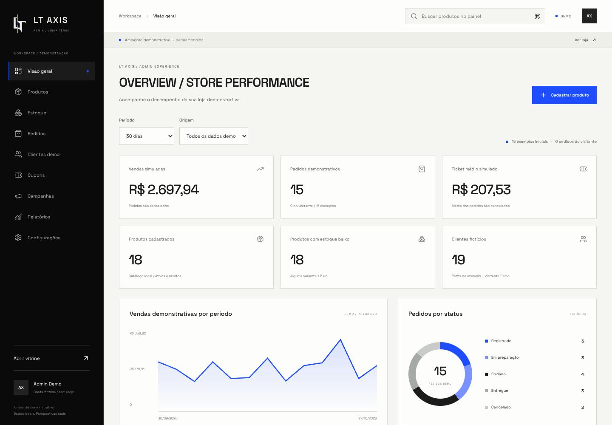

Catálogo e curadoria
Busca, filtros, ordenação, favoritos, Quick View e variantes compõem a exploração das peças.
PROJETO CONCEITUAL · PORTFÓLIO · V5
Da identidade LT Axis à experiência de compra: um e-commerce conceitual de streetwear com catálogo, sacola, checkout e painel demonstrativos.
Projeto conceitual, sem cliente real. As imagens mostram interfaces existentes; um clipe curto destaca apenas uma interação da aplicação original. Esta apresentação não executa a loja ou o painel da demo. Ainda não há link público para testar a aplicação interativa.

01 / CONTEXTO E PROPOSTA
O projeto explora como direção de arte e interação podem formar uma experiência consistente, da vitrine à gestão. A linguagem editorial combina contraste, fotografia de conceito e acentos em azul.
02 / IDENTIDADE VISUAL
A identidade LT Axis usa Anton nos títulos, Space Grotesk na interface e Barlow Condensed nos detalhes. A paleta e a composição abaixo estão documentadas no projeto original.
03 / RECURSOS NO PROJETO ORIGINAL
Recursos identificados no código e na documentação do projeto. As capturas abaixo apresentam esses fluxos; a execução interativa pertence à aplicação original.
Busca, filtros, ordenação, favoritos, Quick View e variantes compõem a exploração das peças.
Sacola persistida, cupons, entrega fictícia, checkout em etapas e histórico de pedidos locais.
Painel LT Axis com produtos, estoque por variante, pedidos, campanhas e relatórios demonstrativos.
04 / INTERFACES EXISTENTES
Capturas copiadas dos arquivos originais, sem montagens ou interfaces inventadas. Dados, valores e estados exibidos são exemplos. Abra cada imagem em uma nova aba para ampliar.





DETALHE EM MOVIMENTO
Um recorte do catálogo original mostra a alternância entre a frente da peça e a fotografia de acabamento. O restante do projeto está apresentado nas imagens acima.
A mesma camiseta é exibida nas vistas Frente e Acabamento. Os controles do card alternam a fotografia e indicam a opção selecionada.
Clipe de aproximadamente 8 segundos, sem áudio. Reprodução automática ao entrar na tela, com controles para pausar. A preferência por movimento reduzido mantém a reprodução manual. Baixar o clipe.
05 / TECNOLOGIAS
O código original está em um repositório independente. Esta apresentação no portfólio da dSaOl usa HTML e CSS e mantém as tecnologias do site principal.
06 / ALCANCE DA DEMONSTRAÇÃO
O painel demonstrativo deste projeto é independente do painel protegido da dSaOl Web Studio. Nenhuma função deste estudo altera usuários, clientes ou projetos do backend da dSaOl.
Consultar o projeto original no GitHubVamos conversar sobre o formato que faz sentido para a sua ideia.